Географія
Лежить на межі лісостепової та поліської зон. Пересічна температура січня −5,6 °C, липня +18,2 °C. Опадів 628 мм.
Місто розташоване на річці Хомора, за 104 км від Хмельницького. У межах міста розташована залізнична станція Полонне та залізнична станція Понінка на лінії Шепетівка—Бердичів. Через місто проходять дороги Т 2309 Шепетівка—Бердичів та Т 0612 Новоград-Волинський—Старокостянтинів.
Походження назви міста
Про Хомору та «град Полоний в лузі Хоморном» згадується в літописах Київської Русі, зокрема Іпатіївському та Лаврентіївському літописах. Місто називалося по-різному: «Полонноє», «Полони», «Польний», «Полний», а в давніх актах — «Полонная», «Полонне», «Полонне Великое», «Полонне Новоє». Щодо походження назви на сьогодні існує декілька версій. Дехто вважає що вона пішла від назви території, де жили поляни, Полянської землі, інші — від слова «полонити», брати в полон. Проте основною вважається така версія: назву місту дало поняття «полонь» — луг, сіножать, безлісе місце. М. Толстой, видатний славіст, академік, в 1969 році виконав детальний аналіз цього слова : «На Поліссі чистий простір лук серед лісу чи боліт, іноді біля річки, називається полонь чи болонь. Обидві форми не співіснують в одних і тих же говірках і можуть бути розмежовані географічно. В західній частині СРСР — полонь».[3] Згідно з «Етимологічним словником літописних географічних назв Південної Русі» назва міста утворилася семантичним способом від давньоруського «полонина» (лука, луг) до «полоня» — «відкритий простір, який не поріс деревами й кущами». Ця версія підтверджується існуванням в старій частині міста місцевості під назвою «оболонь» (заплавні луки) — що, по суті, тотожне поняттю «полонь». Полонне перебуває на межі лісу та поля, Полісся та Лісостепу. На такій самій межі неподалік знаходяться села Поляна, Полянь і Полянка. Спільний корінь «поле» в усіх цих назвах і їх схоже розміщення додають додаткової ваги твердженню, що назва міста відображає його розташування і вигляд — безлісе місце над річкою. Іншими мовами назва міста пишеться так: англійською — Polonne, польською — Połonne, російською — Полонное, їдиш — פולנאה.
Історія
Перша згадка про Полонне
Полонне декілька раз згадується в давньоруських Іпатіївському та Лаврентіївському літописах. Одна з згадок говорить, що у 1169 році половці, заглибившись у володіння Київського князівства, дійшли до міста Полонного, яке належало київській Десятинній церкві: «Половцѣ ѣхаша за Къıѥвъ воѥватъ и приѣхаша к Полному къ ст҃ѣи Бц҃ѣ граду к десѧтиньному … и взѧша села безъ оутеча с людми с мужи и с женами конѣ и скотъı и ѡвцѣ погнаша в Половцѣ». З літописів відомо, що в 996 році Володимир Великий завершив будівництво Десятинної церкви і приписав їй десяту частину своїх «градів» (міст). Серед них було і Полонне, недарма літописець називає його «святої Богородиці град Десятинний».
Під час проведення міжнародної науково-практичної конференції 15-17 червня 1995 року «Місту Полонному — 1000 років» академік Іон Винокур заявив таке: «Що ж стосується історії Полонного епохи Київської Русі, то, крім літописних згадок про місто, ми маємо на основі археологічних розвідкових робіт 1992—1993 років матеріали, які датуються від X до XIII століть…
…Саме з 996 роком можна пов'язати найдавнішу згадку про Полонне».
Полонне літописне
Докладніше: Полонне в літописах Київської Русі
Міські укріплення
Докладніше: Полоннська фортеця
Полонський монастир
Докладніше: Полонський монастир
Давня історія
996 року князь Володимир Святославович приписав Полонне до київської Десятинної церкви. Спочатку місто належало Великим князям Київським; бували великі князі Володимир Святославович, Ярослав Мудрий, в 1170 році жив удільний князь Володимир Мстиславович. 1195 рік київський князь Юрій віддає Полонне своєму зятеви Роману Мстиславовичу — правителю Волині. З цього часу і по сьогодні місто є складовою Великої Волині. Після утворення Галицько-Волинського князівства Полонне ввійшло до його складу. Стояв зі своєю раттю біля Полонного король Данило Романович — тоді власник міста.
У XIII столітті в Полонному існував православний монастир.
Протягом віків місто Полонне було відоме своїми ремісниками. Завдяки отриманому містом у другій половині XVI ст. магдебурзькому праву ремесла набувають надзвичайного[джерело?] розвитку, створюються ремісничі цехи.
В угоді від 1366 р. польського короля Казимира III з великим князем Дмитром-Любартом Полонне згадується серед «мурованих» міст. 1494 року місто було надане князю Костянтину Острозькому[4]. 1510 р. на місці укріпленого посаду князь Костянтин Острозький будує нову фортецю. 1569 рік Полонним заволодів польський шляхтич Альбрехт Ласький, наступного 1570 p. він передав місто королю[5].
1640 р. князь, краківський воєвода Станіслав Любомирський сприяє укріпленню центру міста бастіонним п'ятикутним на плані оборонним валом за голландською системою і фортечними мурами. Автором перебудови був італійський архітектор Матео Трапола.З 1648 року Полонне було сотенним містом Волинського полку в Українській державі Богдана Хмельницького. Коронний референдар, теребовлянський староста Стефан Потоцький підписувався як «пан на Чорткові та Полонному».[6]
11 грудня 1766 р. король Станіслав ІІ Август Понятовський підтвердив права міста на прохання його тогочасного власника — князя Марціна Єжи Любомирського (†1811), сина казімірського старости Антонія Бенедикта (†1761).[7][8] Імовірно, тоді ж виник історичний герб Полонного з зображенням християнського патрона князя — Святого Мартина верхи на коні. В XIX — початку XX ст. місто було центром Полонської волості. Наперекір руйнівним війнам, у місті залишились історичні пам'ятки сивої давнини: територія оборонної фортеці ХІІ ст., земляні вали, залишки замку на історичній Татарській вулиці.Економіка
В основному в Полонному розвинені легка, харчова, будівельна промисловість. Станом на 01.01.2011 року в місті також зареєстровано понад 2000 суб'єктів підприємницької діяльності — фізичних осіб. На 2011 рік у місті працюють:
- ВАТ «Полонський гірничий комбінат»;
- ТОВ «Полонне Траузес Фекторі»;
- Полонський спецкар'єр;
- ВАТ «Полонський КХП»;
- ЗАТ «Полонський хлібзавод»;
- Агрофірма «Маяк»;
- Полонська друкарня;
- 22 малі підприємства.
Керамічне виробництво у Полонному
Вже наприкінці XIX ст. у Полонному діяло чотири підприємства по виробництву порцеляни та фаянсу: Завод А. С. Бахмутського, завод М.Шапіро-Ф.Зуссмана (Санітарного фаянсу), ляльковий завод А. Я. Брички та завод О. Г. Карміне, В. І. Полляка та В. В. Кліха «Богемія». Це пояснювалось, зокрема, наявністю покладів каоліну, вогнетривких глин та польового шпату практично на околиці міста
Протягом XX століття діяли підприємства з виготовлення столового посуду — Полонський порцеляновий завод (ППЗ — колишній Шапіро-Зуссмана) та з виготовлення скульптури Полонський завод художньої кераміки (ПЗХК — колишній завод Брички — Артіль «Керамік»).
З 2009 року промислове порцелянове виробництво у місті припинено, проте досить поширене кустарне виробництво порцеляни та кераміки окремими підприємцями. Діє також оптовий ринок порцелянової продукції. У серпні 2013 р. вийшов у світ каталог продукції ПЗХК. У жовтні 2013 р. у Полонному відкрили музей порцеляни Полонного[16].
Лісопильне виробництво
До 1917 року у місті працювала лісопилка (16 робітників).
Пам'ятки архітектури, об'єкти туризму
- Земляний вал давньоруського городища, XII—XIII ст.
- Козацька могила, XVII ст.
- Римо-католицький костел Святої Анни, 1607 p.
- Покровська церква 1720 p., перебудована на початку XX ст.
- Троїцька церква, збудована 1734 року, зруйнована в 1930 рр., відбудована в 2019 р.
- Полонський парк — пам'ятка садово-паркової архітектури XIX ст. загальнодержавного значення
- Кам'яні склепи цадиків-хасидів на єврейському цвинтарі, XVIII ст.
- Каплиця-склеп родини Карвіцьких на польському кладовищі, XIX ст.
- Поховання старців
- Водяний млин і склади в районі Гамарні, XIX ст.
- Комплекс водяного млина по вул. Лесі Українки, 1901 p.
- Будинок, у якому мешкала українська поетеса Леся Українка, вул. Академіка Герасимчука, 148
- Пам'ятний знак жертвам Голодомору.
- Будинок редакції районної газети, колишня контора полонських млинів Дунін-Карвіцьких, 1910 p.
- Музей полонської порцеляни, вул. Лесі Українки РБК
Цікаві факти
У 2021 році була знайдена єдина на теренах України давньоруська свинцева грамота – зразок давньої писемності, саме розмовної мови, не пов’язаної з книжковою традицією. Написана у часовому проміжку між 1140 та 1180 роками і містить 2 грамоти - «ГРАМОТА ВІД ХИТРА» і «ГРАМОТА ДО МІЧА».
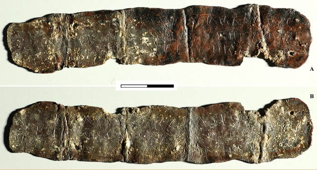Полонська свинцева грамота. Знахідка містить текст з обох сторін пластини, і починається зі слова Грамота
Галерея
 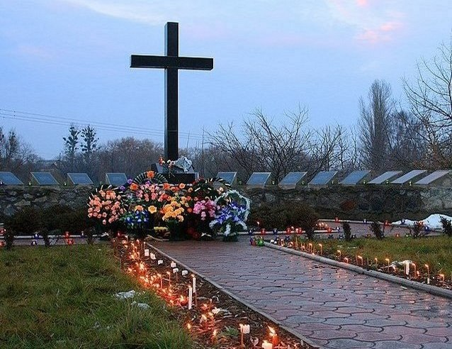
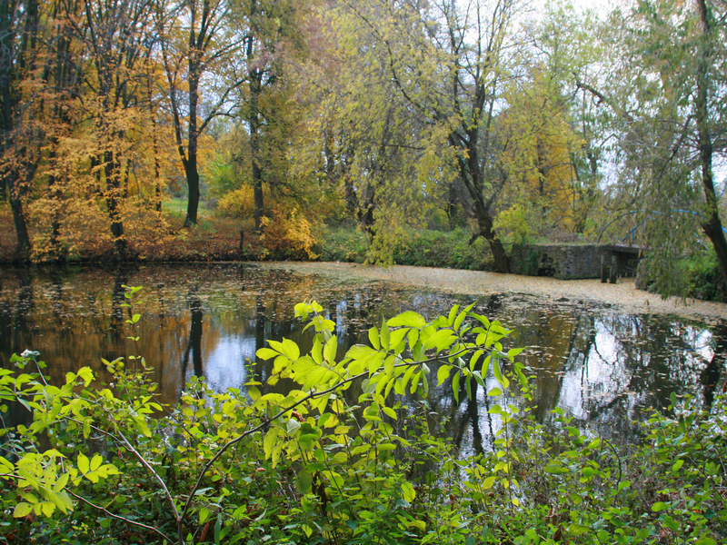
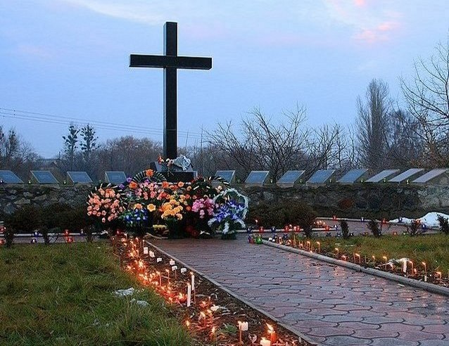
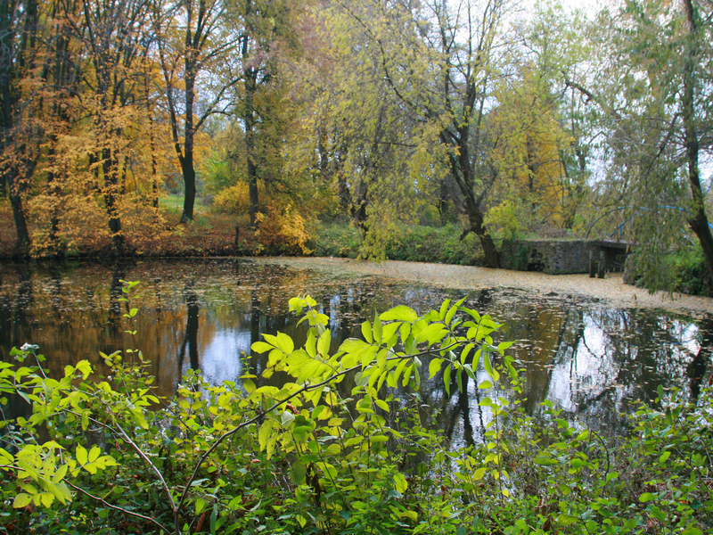
 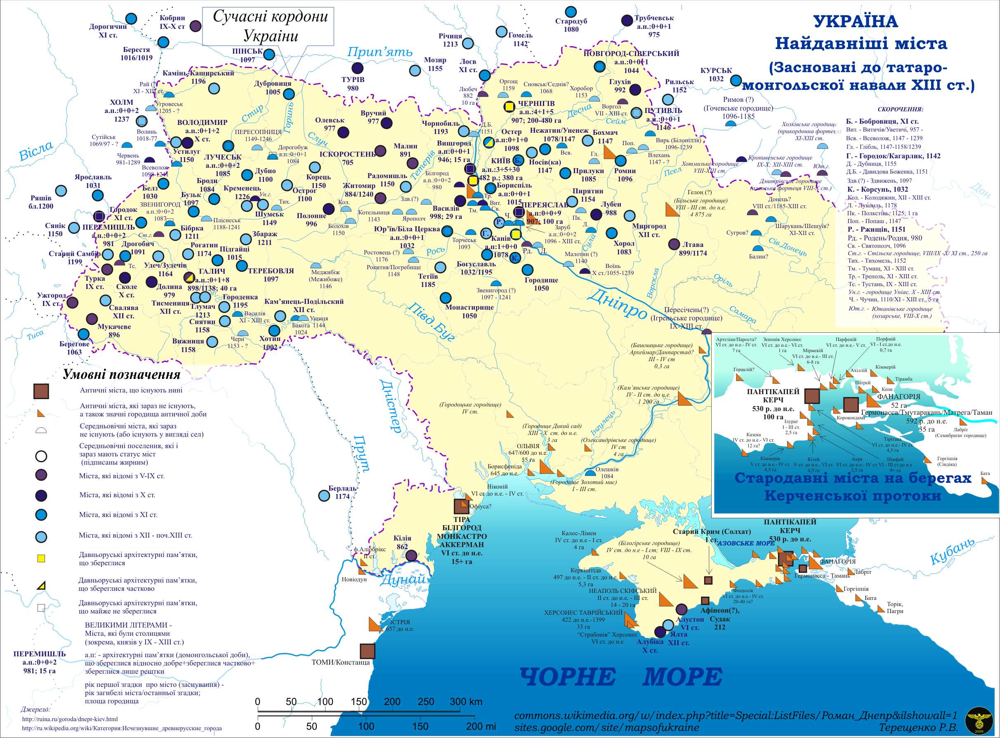
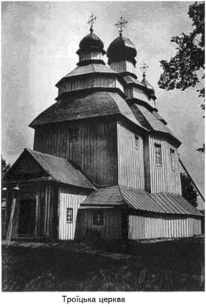
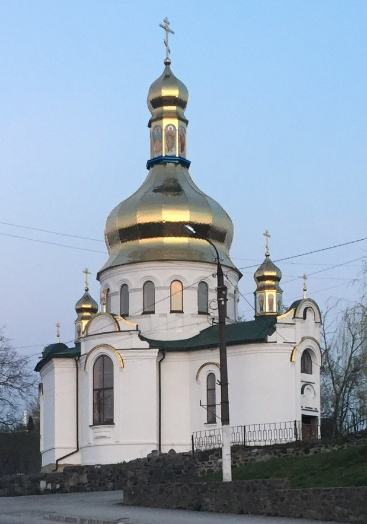
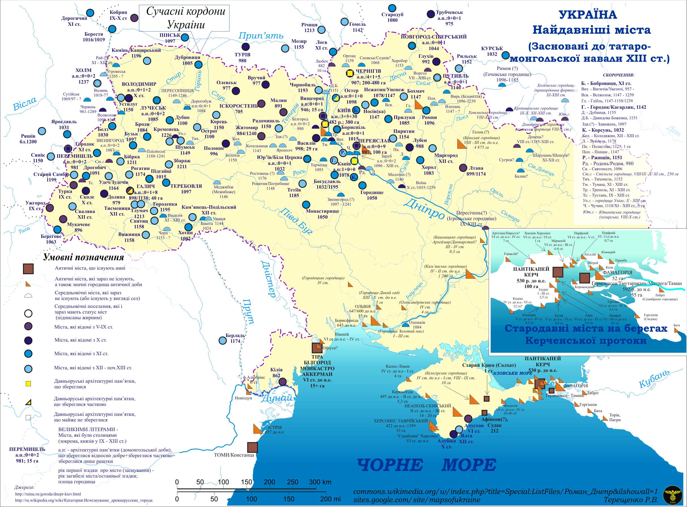
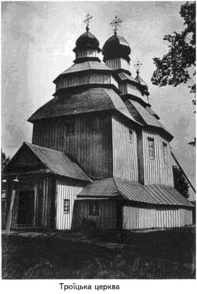
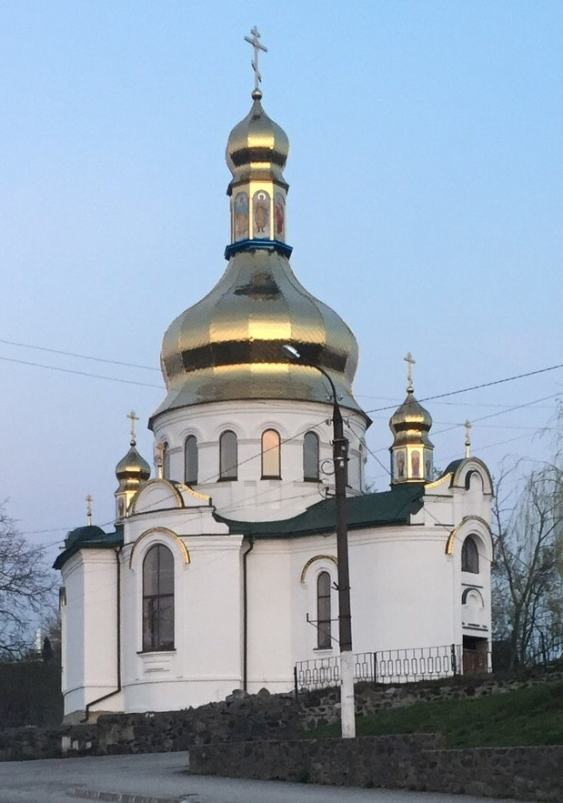